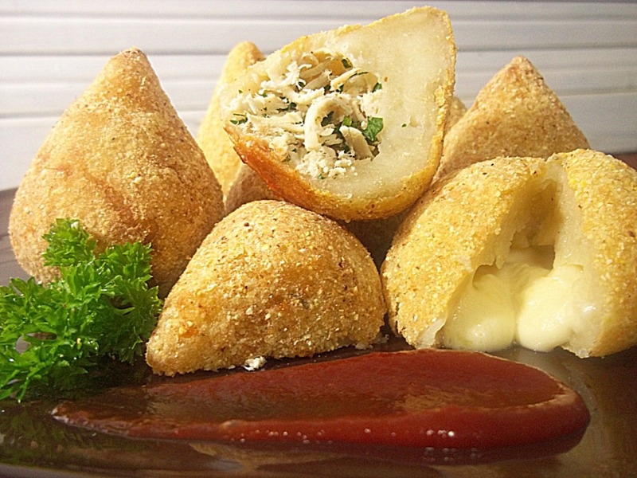

No sabes qué hacer con las sobras del pollo? proba esta receta brasileña con divertida forma. Una receta bien fácil y crujiente que los peques de la casa van a adorar. Prueba a personalizar y variar el relleno a tu gusto. Una receta perfecta para el aperitivo o para comer como plato acompañado de ensalada, verdura, pasta o arroz.
La coxinha es un aperitivo típico de la cocina brasileña y también de la cocina portuguesa elaborado con pechuga de pollo deshebrada envuelto en una masa, luego empanizada y frita. El nombre coxinha significa literalmente "muslito" y hace referencia a la forma y contenido del alimento.
Para esta receta necesitamos algunos ingredientes muy faciles de conseguir:

- 3 unidades de pata o muslo de pollo
- 1 Lt de caldo de pollo
- 1 cebolla pequeña (picada)
- 1 morron
- 2 dientes de ajo (picado)
- 2 cdas de aceite de oliva
- 375cc de leche
- 50g de manteca
- 450g de harina 0000
- 1 puñado de perejil fresco
- 3 cebollas de verdeo(solo usaremos la parte verde)
- Sal y pimienta
- Queso manecoso para rellenar
Procedimiento para la preparacion
- Cocinar los muslos de pollo en el caldo de pollo en una cacerola hasta que esté cocido. Retirar las patamuslos y dejar enfriar el líquido.
- Mientras el pollo se cocina, dorar la cebolla picada y el ajo en las 2 cucharadas de aceite de oliva durante unos 10 minutos , hasta que estén blandas .
- En una olla poner 375ml del caldo de pollo, 375 de leche y la manteca. Condimentar bien para que la masa quede bien sabrosa. Derretir la manteca en el líquido y luego agregar la harina. Cocinar sólo para un unos minutos revolviendo con cuchara de madera hasta que la masa comienza a unirse y se vea el fondo de la cacerola.
- Coloque la masa en un plato y dejar hasta que esté fría.
- Cortar finamente el pollo cocido , el perejil y el verdeo, añadir sal y pimienta y dejar esta mezcla finamente picada.
- No enharinar una superficie, sino simplemente trabajar la masa hasta que esté suave (unos 10 minutos ) y luego pellizcar trozos de tamaño de una pelota de golf de la masa, hacer una bola y luego aplanar en discos para rellenar con una cucharadita escasa de la mezcla de pollo picada, cebolla, perejil, etc. Cerrar los bordes , por todas partes, para que tenga una bola, y dar forma de pera. Colocar en una bandeja.
- Apanar las coxinhas, freírlas y están listas!
Por aca te dejo un video para que puedas ver la preparación de esta delicia brasileña y mas abajo unos temas para que cantes mientras las cocinas